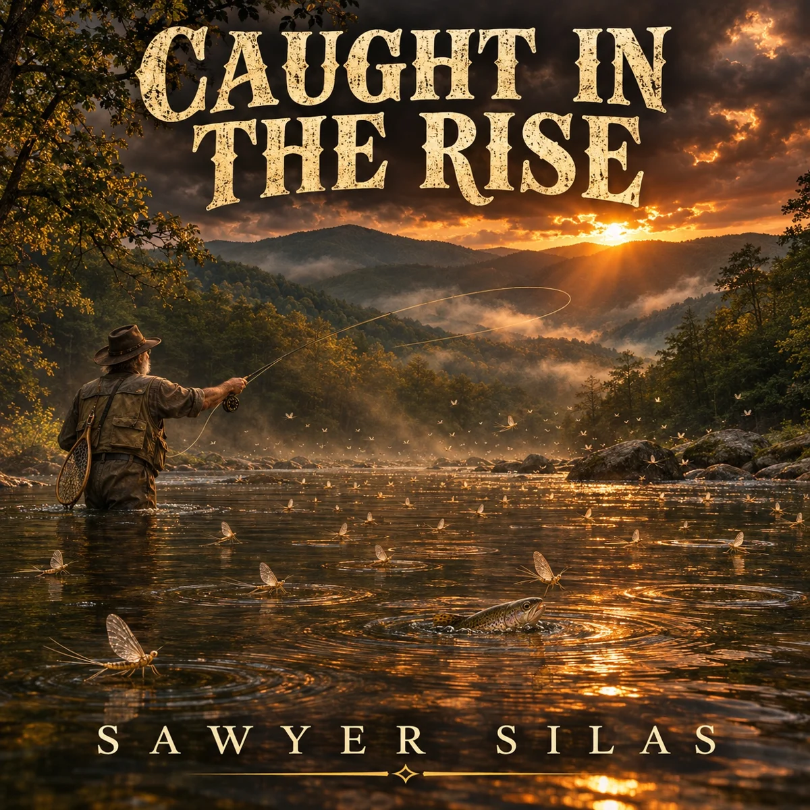

Song storyRemember when Christmas felt bigger than everything else?
The colored lights. The smell of cookies. Familiar voices gathered in the same room. And that long Christmas Eve when you tried so hard to fall asleep, but couldn’t stop listening for something on the roof.
“Back When Christmas Was Bigger Than The World” returns to the wonder of being a kid in simpler times, when being together was the heart of the holiday.
With a gentle country sway and the warmth of Irish fiddle, the song holds onto those little things that felt enormous: a tree full of lights, a house full of family, and a whole world of possibility waiting for morning.
’Cause believing was easy,
and sleeping was hard.
A little Christmas nostalgia from Sawyer Silas, for everyone who remembers looking up through the branches and wishing that feeling could last.